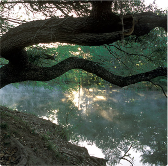
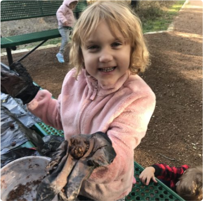
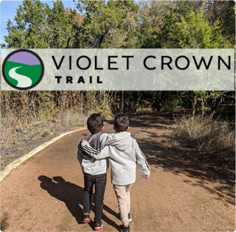

Stay up to date with the Violet Crown Trail, land conservation, events, the guest blogger series and all things Hill Country Conservancy.
Get Involved
Join EPIC
Emerging Professionals in Conservation (EPIC) is a group of young professionals dedicated to exploring and preserving the natural beauty of the Texas Hill Country. Activities include camping trips, kayaking, ranch tours, and more.
Become A Trailblazer
Support Hill Country Conservancy and the Violet Crown Trail by becoming a Trailblazer! Members enjoy snazzy swag and access to exclusive events.
Protect the beautiful Hill Country through your support of Hill Country Conservancy. Your gifts will:

PROMOTE
HCC partners with area landowners to protect open space in the Texas Hill Country...

PROVIDE
HCC provides the community with much-needed access to the outdoors via the Violet Crown Trail...

PROTECT
Hill Country Conservancy promotes a conservation ethic throughout the community...